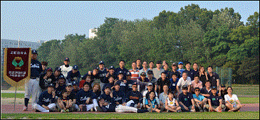
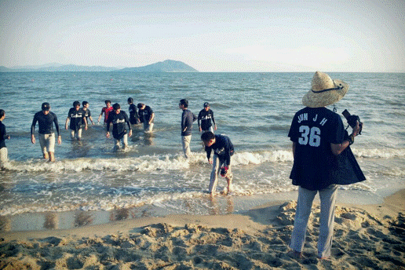

| | + SINCE 1979, ZEBRA 성균관대학교 자연과학부 수학과 야구동아리 ZEBRA는 1979년 만들어졌습니다.수학과 내에서 가장 오래된 동아리이며, 역사와 전통이 있는 동아리입니다. 2008년, ZEBRA는 창단 30주년을 맞이하였고 지금까지 활발한 활동을 하고 있습니다. 30년을 넘어 앞으로도 ZEBRA의 역사는 계속될 것입니다. ZEBRA를 이끌어나갈 주인공은 바로 당신입니다. |
 |
| | + ZEBRA는 가족입니다. 다들 자신의 동아리가 '가족같은 동아리' 라고 말합니다.하지만 ZEBRA는 조금 다릅니다. '가족같은' 동아리가 아닌 '가족인' 동아리가 되고 싶습니다. 기쁜 일과 슬픈 일 모두 함께하는 동아리. ZEBRA가 항상 당신의 곁에서 힘이 되겠습니다. |
| | + ZEBRA의 연중행사 안내 2월, 신입회원 새 기수 모집3월, 1학기 개강훈련 및 환영회 4월, ZEBRA 시무식 5월, ZEBRA 착복식 7월, ZEBRA 여름 전지훈련 9월, 2학기 개강훈련 9월, ZEBRA vs SIGMA 정기전 11월, ZEBRA 카니발 12월, ZEBRA 겨울 MT ZEBRA는 현재 자연과학리그와 건학기념제 토너먼트에 참가하고 있습니다. 리그와 토너먼트 경기일정은 ZEBRA 행사와 겹치지 않게 조정될 것입니다. 신입회원은 수시로 모집 중입니다. |
 |
| | + 공식홈페이지 mathzebra.com 2003년, 공식홈페이지 mathzebra,com 오픈 (제작 : 99학번 이민우 선배님)2006년 4월 4일, 1차 리뉴얼 및 2006년 5월 2차 리뉴얼 완료 (ver 1.0) 2007년 9월, 3차 리뉴얼 완료 (메뉴 세분화, 웹진 발행) (ver 2.0) 2011년 3월, 4차 리뉴얼 완료 (사용자 중심의 심플한 홈페이지) (ver 3.0) 볼거리, 즐길거리, 얘기거리가 많은 홈페이지를 만들기 위해 모든 ZEBRA 가족들이 열심히 노력하고 있습니다. |